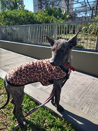

Ella es Cata, tiene 8 meses, es muy cariñosa y le gusta salir, actualmente esta en tratamiento por demodexia.
 El es Nano, tiene 5 años y es paticorto, necesita salir a menudo ya que es muy energico, tambien es muy cariñoso.
El es Nano, tiene 5 años y es paticorto, necesita salir a menudo ya que es muy energico, tambien es muy cariñoso. El es Bandido, tiene 5 años, esta castrado, es un perro tranquilo pero que aun le cuesta la adaptacion con los niños.
El es Bandido, tiene 5 años, esta castrado, es un perro tranquilo pero que aun le cuesta la adaptacion con los niños. Ella es Nina, fue rescatada de un acumulador de Boedo, buscamos transitos que la ayuden a socializar, es desconfiada con la gente y miedosa, no sabe pasear con la correa.
Ella es Nina, fue rescatada de un acumulador de Boedo, buscamos transitos que la ayuden a socializar, es desconfiada con la gente y miedosa, no sabe pasear con la correa.Ella es Limonada, tiene 10 meses es muy juguetona, cariñosa y energica, le encanta salir a pasear y jugar.
Ella es Reyna, tiene 2 años, le gusta pasear, pero le cuesta la adaptacion con otros perros o con los niños.
 Ella es Tiana, tiene 6 años y lamentablemente tambien fue rescatada del acumulador, es deconfiada y timida, requiere mucha paciencia.
Ella es Tiana, tiene 6 años y lamentablemente tambien fue rescatada del acumulador, es deconfiada y timida, requiere mucha paciencia. El es Tomy que al igual que Nina fue rescatado del acumulador, sufre la misma desconfianza y temor que ella, buscamos transitos que los ayuden a volver a sociabilizar.
 Ellos son Lucas y Caty, Lucas tiene 2 años, esta castrado y es muy energico, Caty tiene 4 años, le encanta jugar y se lleva muy bien con los chicos
Ellos son Lucas y Caty, Lucas tiene 2 años, esta castrado y es muy energico, Caty tiene 4 años, le encanta jugar y se lleva muy bien con los chicos Ella es Venecia, la rescatamos debajo de un puente en Pompeya, es muy miedosa, estaba a la deriva en una zona peligrosa ya que pasan muchos camiones y colectivos.
Ella es Venecia, la rescatamos debajo de un puente en Pompeya, es muy miedosa, estaba a la deriva en una zona peligrosa ya que pasan muchos camiones y colectivos.